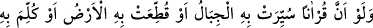
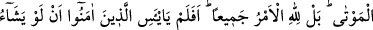
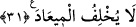

okuyup hatırlatsınlar. Her şeyin yaratıcısının ve Rabbinin Allah olduğunu ve O’ndan
başka hiçbir ilah bulunmadığını, sadece O’na dönüleceğini bildirsinler. et-Te’vîlâtü’n-
Necmiyye’de böyle geçmektedir.
Fakir (Bursevî) der ki: “Seni gönderdik” ifadesindeki hitap ibaresi, Hz. Peygamber
(s.a.)’e olduğundan gerek lügat gerekse ıstılah bakımdan gönderilen (mürsel) O’dur,
vahyin ve dâvetin sahibi kendisidir. Bu ifade işâret yoluyla Hz. Peygamber’in mîrâsına
mazhar olmaları bakımından kıyamet gününe kadar meşrebi üzere olan bütün vârisleri
için de geçerlidir.
Ancak bu vârisler, ıstılâhî bakımdan değil, lügavî bakımdan ‘gönderilmişlerdir, ilhâm
ve irşâd sâhibidirler. Ayrıca nasıl her zaman bir devlet ve zuhûr sâhibi bulunuyorsa,
rahmet ve mânevî tasarruf sâhibi biri de bulunmaktadır. Hz. Peygamber (a.s.)’ın;
“Ümmetimin âlimleri İsrâiloğulları’nın peygamberleri gibidir.”[140] buyurması da
bundan dolayıdır. Bu ifadesiyle Hz. Peygamber ümmetinin âlimleri için ilhâm yoluyla
Allah’tan haber getirme mânâsını ispat etmiştir.
“Oysa onlar Rahmân’ı inkâr ediyorlar” ifadesinde de kendilerine nimet verilenlerin
bunları verene nankörlük etmeyip aksine O’na îman ve itikada şükretmesi gerektiğine
işâret vardır. Nitekim bu ifadenin öncesi de buna delâlet etmektedir.
Îman ve ikrâr güzelliklerin en güzeli olduğu gibi küfür ve inkâr da çirkinliklerin en
çirkinidir. Hüsn-i zan ve güzel inancın çok büyük bir tesiri vardır.
Rivâyete göre bir grup harâmî bir hana misâfir oldu. Han sahibi kim olduklarını
sorunca utanarak gâzî olduklarını söylediler. Bunun üzerine han sahibi kendilerine
yemek hazırladı. O sırada bir kadın geldi ve yemekten önce ellerini yıkasınlar diye
önlerine bir leğen koydu ve şöyle niyet ederek: “Benim kör bir kızım var, şu gâzîlerin
ellerini yıkadıkları suyla teberrüken onun yüzünü yıkayayım.” Adamlar ellerini leğende
yıkadılar, kadın da bu suyla yavrusunun yüzünü yıkadı. Yıkar yıkamaz çocuğun gözleri
görmeye başladı.
31. Eğer okunan bir Kitapla dağlar yürütülseydi veya onunla yer parçalansaydı,
yahut onunla ölüler konuşturulsaydı (o Kitap yine bu Kur’an olacaktı). Fakat bütün